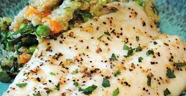

Baked Tilapia

Description
This recipe is simple and fast to prepare. And uses common ingredients.
It's too delicious
Ingredients
- 4 (4 ounce) fillets tilapia
- 2 teaspoons butter
- ¼ teaspoon Old Bay Seasoning TM, or to taste
- ½ teaspoon garlic salt, or to taste
- 1 lemon, sliced
- 1 (16 ounce) package frozen cauliflower with broccoli and red pepper
Steps
- Preheat the oven to 375 degrees F (190 degrees F). Grease a 9x13 inch baking dish.
- Place the tilapia fillets in the bottom of the baking dish and dot with butter. Season with Old Bay
seasoning and garlic salt. Top each one with a slice or two of lemon. Arrange the frozen mixed vegetables around
the fish, and season lightly with salt and pepper.
- Cover the dish and bake for 25 to 30 minutes in the preheated oven, until vegetables are tender and
fish flakes easily with a fork.
back to main page